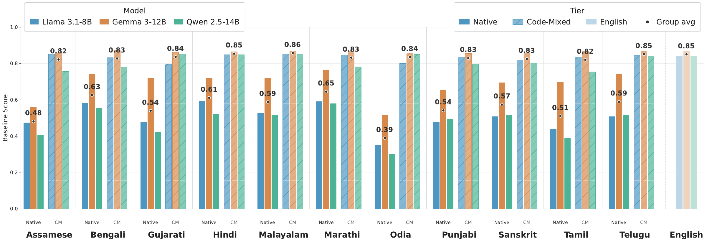
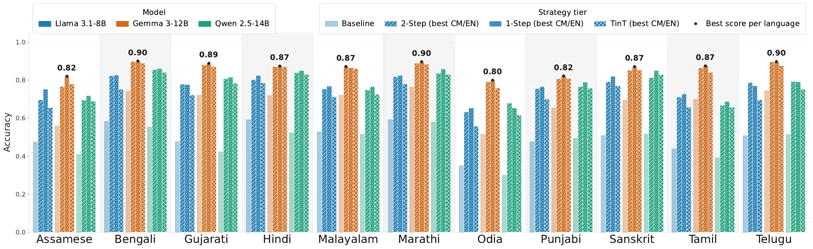
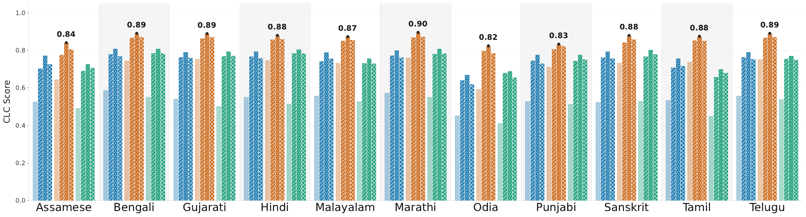
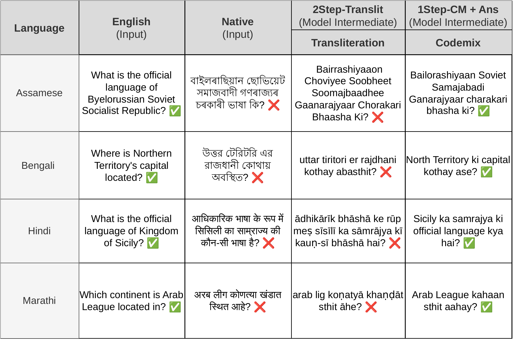
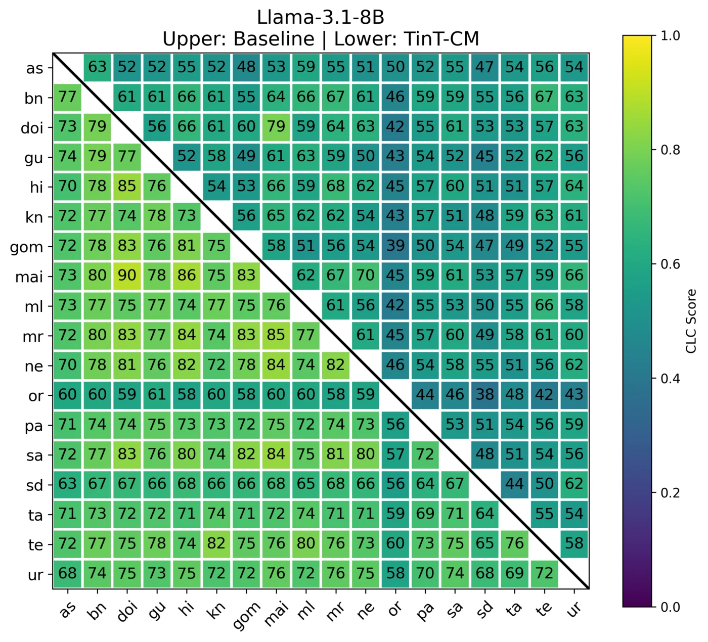
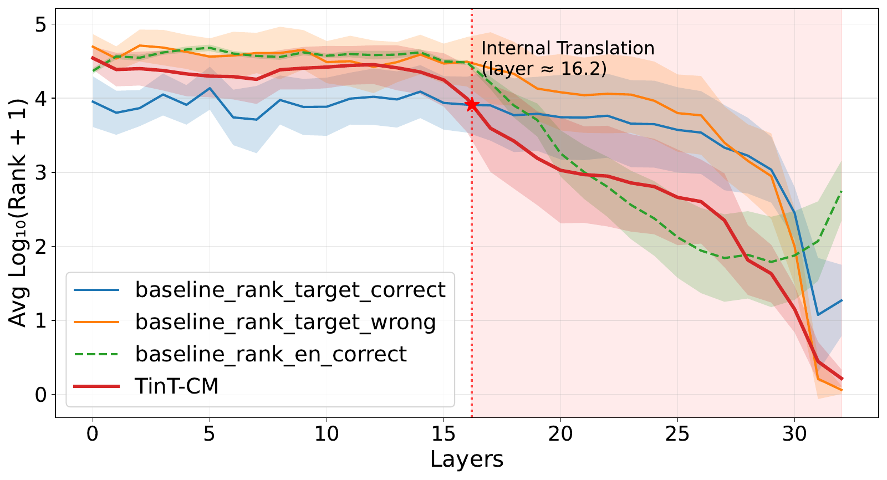

Evaluating Cross-lingual Knowledge Consistency in Code-Mixed vis-a-vis Indian Languages using IndicKLAR
1Indian Institute of Science Education and Research, Bhopal 2Microsoft Research India 3UNSW Sydney
TL;DR

TL;DR Ask an LLM the same factual question in Hindi, Assamese or Telugu instead of English and its accuracy can drop by up to ~0.50. Rewriting the question in code-mixed form (native grammar, English content words) brings it back to within ~0.05 of English, with no change to the model. Our Translate-in-Thought (TinT) prompt gets the model to make that conversion internally and recovers most of the gap.
Abstract
Large language models often exhibit a substantial gap between their performance in English and in lower-resourced languages on equivalent knowledge queries, a cross-lingual consistency issue that remains underexplored for Indian languages and their code-mixed counterparts. To study this gap, we introduce IndicKLAR, an Indic extension of the KLAR-CLC benchmark covering 18 of the 22 scheduled Indian languages. For 11 widely used language pairs, we additionally provide code-mixed variants. Both monolingual and code-mixed inputs are verified by native speakers. This three-way alignment enables us to examine how knowledge recall consistency varies across English, code-mixed, and native Indian language inputs.
Across nine open-weight models, we find that the accuracy gap between native-language and English inputs can reach ~0.50, while code-mixed inputs substantially reduce this gap, bringing performance within ~0.05 of English without any model-level intervention. Motivated by this finding, we evaluate several prompting strategies that differ in how explicitly language conversion is exposed: a two-stage translate-then-answer setup, a one-stage joint translation-and-answer prompt, and Translate-in-Thought (TinT), a single-step strategy in which the model internally converts the input and outputs only the final answer. Across the native → code-mixed → English performance trajectory, we observe a consistent flip point (the transition from incorrect to correct prediction) between the native and code-mixed settings. Notably, this pattern holds both when the code-mixed representation is explicitly provided as input and when the model is prompted to convert internally using TinT.
Interactive demo
Browse real IndicKLAR items and see exactly what the models are asked, then explore every result in the paper by language, model and strategy.
1 · Explore the benchmark
Each fact is aligned across English, the native language and, for 11 languages, a code-mixed version. Pick a language and a fact category. The demo opens on the Hindi "Ronaldo" example discussed in the paper.
Loading benchmark samples…
Prompts are reproduced from the evaluation scripts in the repository; the few-shot demonstrations that precede the test question are omitted here. TinT asks the model to convert the question internally and output only the answer, with no intermediate text. Paste a prompt into any chat model to try it yourself.
2 · Explore the results
How much does each strategy move each language? Every dot pair is one language: grey is the baseline (direct prompting in the native script), blue is the chosen strategy. Values come from the full results tables in the paper's appendix.
Show as a table
The IndicKLAR benchmark
IndicKLAR extends the KLAR-CLC knowledge-recall benchmark to Indian languages. Every fact is asked in three aligned forms:
| Input | What it is | Example (Hindi) |
|---|---|---|
| English (EN) | The high-resource upper bound. | Which country is Ronaldo a citizen of? |
| Native (NA) | The query in the language's own script. | रोनाल्डो किस देश का नागरिक है? |
| Code-mixed (CM) | Native script and grammar, with English content words in Latin script. | Ronaldo किस country का citizen है? |
Each language covers 2,619 facts across 20 relation types (capital, place of birth, citizenship, occupation, …), each with a multiple-choice candidate list (mostly 10 options). Native and code-mixed questions were verified by native speakers. The dataset is released under CC BY 4.0 on Hugging Face.
Languages covered
+CM = a code-mixed variant is provided (11 languages, chosen by availability of native-speaker linguists).
Key findings
1 · Code-mixing nearly closes the English–native gap
Native-script queries degrade sharply, approaching 0.10 accuracy on Assamese and Telugu for smaller models. The drop tracks tokenization: longer native-script tokenizations go with lower accuracy (Pearson r = −0.717 to −0.570). Code-mixed queries, however, stay within ~0.05 of English on average, through input formulation alone.

2 · Prompting the model to convert, explicitly or in thought
All strategies start from the native-script question and differ in how visibly the language conversion happens.
| Strategy | Transformation | Procedure |
|---|---|---|
| Baseline | None | Direct prompting on the source query. |
| 2Step-CM / 2Step-EN | Code-mix / English translation | Convert in one call, then answer in a second call. |
| 2Step-Translit | Roman transliteration | Romanize without translating, then answer. |
| 1Step-CM+Ans / 1Step-EN+Ans | Code-mix / English translation | Emit the conversion and the answer in a single pass. |
| TinT-CM / TinT-EN ours | Latent code-mixed / English | Reason internally in code-mix or English; output only the answer. |


TinT improves significantly over the baseline (McNemar tests, p < 10−10), needs a single inference call, and generates no intermediate text.


Locating the flip point
For every question the baseline gets wrong, we ask: does it become correct under TinT-CM, and if not, under TinT-EN? Most recoveries happen at the first boundary (native → code-mixed); moving on to English adds only a small residual gain. The pattern holds across model families and languages, whether the code-mixed form is given explicitly or produced internally by TinT.

An example
The baseline falls back on a memorised association with Cristiano Ronaldo and ignores the candidate list. Pure transliteration restricts the model to the candidates but still fails. Converting the Hindi word for "citizen" while keeping the sentence structure leads to the correct answer. This is an illustration, not a claim about the dominant failure mode.

More analyses: pairwise consistency and layer-wise behaviour


Citation
@inproceedings{mazumder2026evaluating,
title = {Evaluating Cross-lingual Knowledge Consistency in Code-Mixed vis-a-vis Indian Languages using IndicKLAR},
author = {Mazumder, Debajyoti and Pathak, Divyansh and Kodali, Prashant and Joshi, Aditya and Agarwal, Akshay and Patro, Jasabanta},
booktitle = {Findings of the Association for Computational Linguistics: EMNLP 2026},
year = {2026},
eprint = {2605.29637},
archivePrefix = {arXiv},
url = {https://arxiv.org/abs/2605.29637}
}
Acknowledgments
We thank the volunteer native speakers who verified the native and code-mixed questions. IndicKLAR builds on the KLAR-CLC benchmark of Wang et al. (ACL 2025), "Lost in Multilinguality".